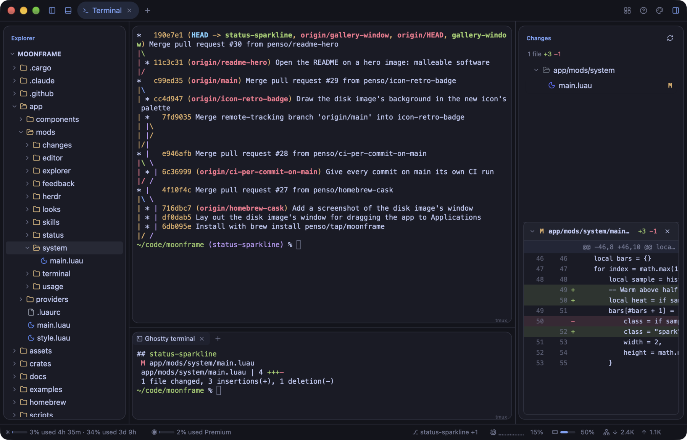

Native desktop apps in Rust and Luau
Ask for a change and watch the running app reshape itself. No rebuild, no restart.

Documentation
Mods, the stylesheet, components, terminals, providers, and whole apps as profiles.